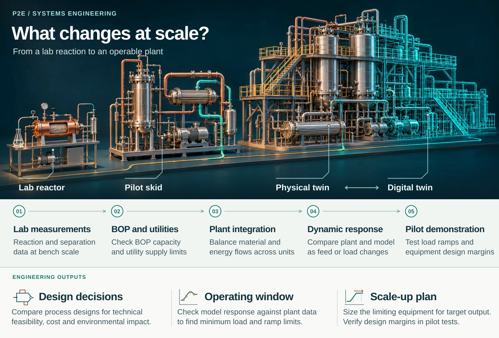

ABOUT US
From core technology to operable plant systems
We study what it takes to make a process work at plant scale. We compare the technical feasibility, cost and environmental impact of different designs, then use operating data to test how the plant responds to changes in feed or load.

Read the diagram
- Core technology. Reaction and separation measurements tell us what leaves the reactor and what can be recovered.
- BOP and utilities. At each target throughput, we check whether the balance of plant (BOP) can handle the load and whether the site can supply the utilities the process needs.
- Plant integration. We link the units through material and energy balances to find how much feed, heat and power the whole plant needs. Those requirements help us compare the feasibility, cost and environmental impact of different designs.
- Dynamic operation. Comparing a physical plant’s response with its digital twin during a load change helps us find minimum load and ramp limits.
- Scale-up and demonstration. These limits guide equipment sizes and design margins. They also tell us which load changes to test on the pilot before committing to a larger design.

Established at KRICT on 15 August 2025
Work with us
Interested in plant design or operation? We welcome research inquiries throughout the year